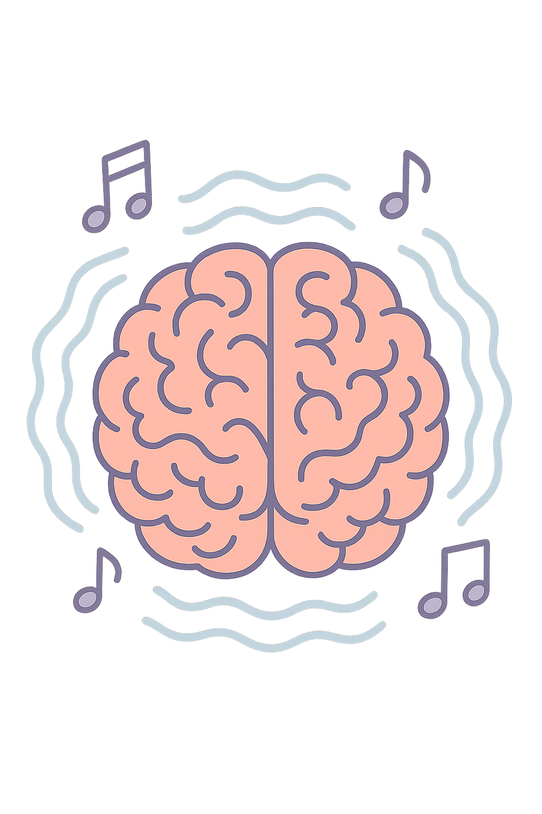
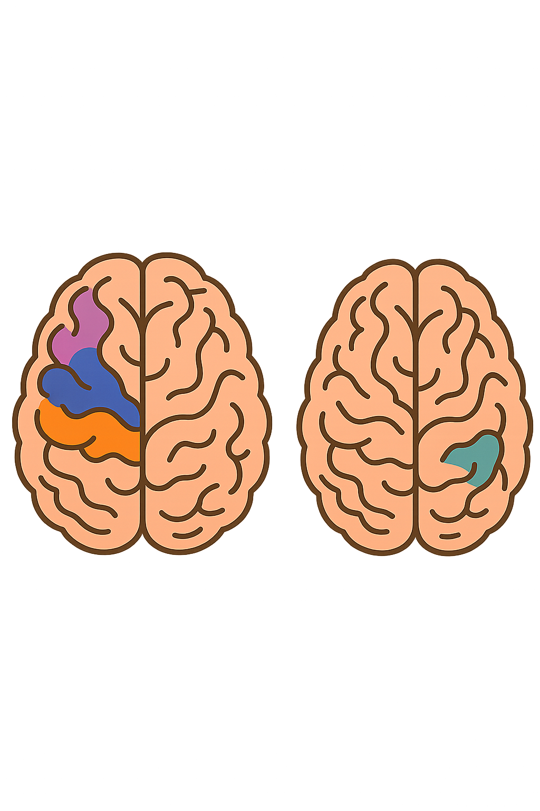
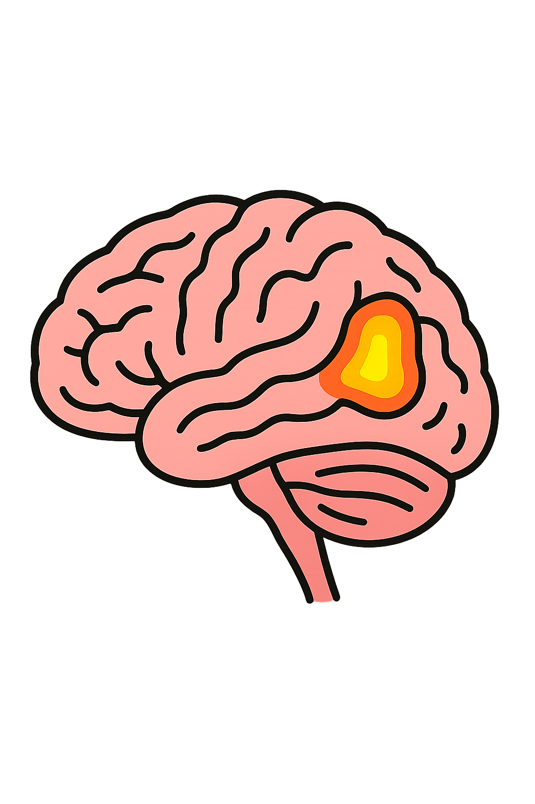
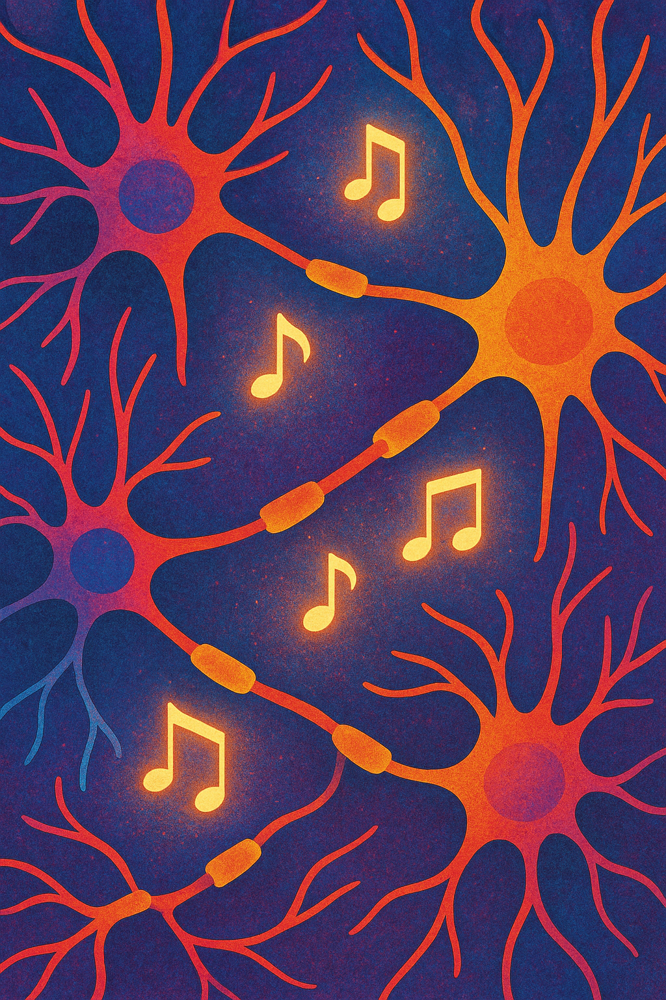

Los genes influyen en nuestras capacidades cognitivas y musicales de manera sutil pero significativa. No determinan por completo lo que somos capaces de lograr, pero sí establecen ciertas bases sobre las cuales se desarrolla nuestro potencial. Desde el nacimiento heredamos una serie de disposiciones biológicas que afectan el funcionamiento del cerebro: la memoria, la atención, la velocidad de procesamiento y la capacidad de aprender. Estos factores, en conjunto, moldean el modo en que adquirimos conocimientos y nos desenvolvemos intelectualmente. En el ámbito musical ocurre algo similar.
Diversas investigaciones han mostrado que existe un componente genético relacionado con el sentido del ritmo, la facilidad para reconocer tonos y melodías, e incluso con la sensibilidad auditiva. Algunas personas nacen con una predisposición natural que les facilita comprender estructuras musicales, afinar con precisión o aprender a tocar un instrumento con más rapidez. No significa que la música sea un talento exclusivo de quienes poseen estos rasgos hereditarios, pero sí que ciertos genes pueden ofrecer una ventaja inicial. Sin embargo, los genes no actúan de forma aislada. El ambiente, la educación, la práctica y las experiencias personales son determinantes para que estas capacidades se desarrollen plenamente. Una persona con predisposición musical puede no llegar a aprender si nunca se expone a instrumentos o formación adecuada; del mismo modo, alguien sin ventajas genéticas puede alcanzar un alto nivel gracias al esfuerzo, el entrenamiento y la motivación. En definitiva, los genes aportan una base sobre la que se construyen nuestras habilidades cognitivas y musicales, pero es la interacción con el entorno la que define hasta dónde podemos llegar.
La influencia genética en el oído absoluto, la percepción musical y la memoria rítmica
La relación entre genética y habilidades musicales ha sido un tema de gran interés científico en las últimas décadas. Entre las capacidades más estudiadas se encuentran el oído absoluto, la percepción musical hereditaria, el sentido del ritmo y la memoria musical. Diversas investigaciones han demostrado que estos rasgos no dependen únicamente del entrenamiento o del entorno cultural, sino que también están vinculados a predisposiciones biológicas heredadas. Aunque la música es una construcción cultural profundamente influida por la experiencia, los estudios actuales apuntan a que la genética ejerce un papel relevante en la forma en que procesamos el sonido desde edades tempranas.

Oído absoluto y predisposición genética
El oído absoluto, definido como la capacidad de identificar o reproducir una nota musical sin referencia previa, es uno de los talentos musicales más llamativos y, al mismo tiempo, poco comunes. Las personas con esta capacidad pueden nombrar y reproducir notas, tonos y acordes al instante, ya que su cerebro puede reconocer directamente la frecuencia de un sonido, incluso de ruidos cotidianos. Durante muchos años se consideró una habilidad casi mágica o exclusivamente resultada de un entrenamiento musical intensivo. Se ha investigado si esta habilidad es innata (genética) o adquirida.
Características principales del oído absoluto
- Identificación sin referencia: Permite reconocer una nota sin la necesidad de compararla con otra. Por ejemplo, al oír una nota cualquiera, la persona sabe decir su nombre de inmediato.
- Reproducción precisa: Se puede cantar o entonar una nota específica que se solicita, o reproducir una melodía sin necesidad de una partitura.
- Reconocimiento de sonidos cotidianos: No se limita a la música; también se pueden identificar frecuencias de ruidos no musicales, como el claxon de un coche, con sus correspondientes notas.
- Habilidad poco común: Se estima que solo un pequeño porcentaje de la población mundial tiene oído absoluto.
- Desarrollo temprano: Generalmente se desarrolla en la infancia, aunque la posibilidad de adquirirlo es mayor en personas que tienen una gran estimulación musical o que hablan idiomas tonales (como el chino o el vietnamita) desde pequeños.
- No es lo mismo que el oído relativo: El oído relativo es la habilidad de reconocer una nota en relación con otra, y es una capacidad que se puede entrenar y mejorar fácilmente con la práctica.
Hoy sabemos que es una combinación de genética + ambiente, con ciertos factores biológicos clave. Los estudios realizados con familias y gemelos han mostrado una tasa significativamente mayor de oído absoluto entre individuos con parentesco cercano, especialmente entre gemelos monocigóticos. Esta tendencia hereditaria sugiere que el oído absoluto tiene una base genética sólida. Investigaciones más recientes han señalado que se trata de un rasgo poligénico, es decir, influenciado por múltiples genes que intervienen en procesos como el desarrollo auditivo, la memoria tonal y, además de tener una corteza auditiva de mayor tamaño en el cerebro, lo que modifica su funcionamiento cerebral. Aunque todavía no se ha identificado un “gen del oído absoluto”, se han encontrado asociaciones con regiones cromosómicas relacionadas con la percepción auditiva, lo que refuerza la idea de una predisposición innata en ciertos individuos.

Percepción musical hereditaria y bases neurogenéticas
Más allá del oído absoluto, la percepción musical general —incluyendo la capacidad para reconocer melodías, armonías y variaciones tonales— también presenta un componente hereditario. Estudios con gemelos han mostrado que la percepción musical básica tiene una heredabilidad moderadamente alta. Esto implica que ciertos aspectos del procesamiento musical están profundamente arraigados en la biología humana, aunque el entorno cultural siga siendo esencial en la formación del gusto y la habilidad musical. Desde el punto de vista de la neurociencia, se han identificado diferencias estructurales en el cerebro de individuos con altas capacidades musicales heredadas. La corteza auditiva y el hipocampo suelen presentar una organización distinta, favoreciendo la integración entre percepción, memoria y emoción musical. Estos hallazgos sugieren que existe una predisposición cerebral, heredada genéticamente, que facilita la construcción de capacidades musicales complejas.

Genes asociados al ritmo y a la memoria musical
El sentido del ritmo y la memoria musical constituyen otras áreas donde la genética parece tener un impacto significativo. El ritmo, que incluye la capacidad de sincronizarse con un pulso y mantener un patrón temporal, refleja un tipo de procesamiento cognitivo que combina percepción auditiva, control motor y atención. Investigaciones recientes han identificado variantes genéticas vinculadas al sentido del ritmo, especialmente en genes relacionados con el control motor y la regulación neuronal. Algunos de estos genes también están implicados en trastornos del lenguaje y del aprendizaje, lo que refuerza la conexión entre ritmo y capacidades cerebrales más amplias. En cuanto a la memoria musical, la genética parece influir tanto en la memoria auditiva a corto plazo como en la memoria a largo plazo asociada a melodías y patrones musicales. Genes asociados con la memoria verbal, la plasticidad sináptica y el aprendizaje han mostrado una participación relevante en la retención musical. Esto indica que la música no es un fenómeno aislado dentro del cerebro, sino un sistema complejo que comparte bases biológicas con otras funciones cognitivas esenciales, como la adquisición del lenguaje o el aprendizaje secuencial.
¿Quieres volver a otras páginas?

Descubre cómo tus preferencias musicales podrían relacionarse con rasgos genéticos y patrones de personalidad
¿Quieres saber más sobre este tema?
Conclusión
Los avances científicos han permitido comprender que las habilidades musicales, incluido el oído absoluto, no emergen únicamente del entrenamiento o la exposición cultural, sino que están fuertemente influenciadas por la genética y el neurodesarrollo. La predisposición hereditaria, combinada con una estimulación adecuada —especialmente a edades tempranas— incrementa significativamente la probabilidad de desarrollar capacidades musicales extraordinarias. El sentido del ritmo, la percepción musical y la memoria asociada a melodías muestran también componentes biológicos que reflejan una compleja interacción entre los genes y el entorno. En conjunto, la evidencia actual señala que la música, aunque profundamente humana y cultural, tiene raíces biológicas que se heredan y moldean desde el nacimiento. Esta perspectiva integradora no solo desmitifica ciertos talentos musicales, sino que invita a comprender la música como una habilidad en la que convergen biología, cultura y experiencia.
Instrumentos, genética y talento: cómo los genes pueden influir en la música
Cuando vemos a alguien tocar un instrumento con facilidad, a veces pensamos que es solo cuestión de práctica. Pero la verdad es que detrás de la destreza musical también pueden estar la biología y la genética. Algunas capacidades que hacen que aprender un instrumento sea más fácil o difícil no dependen solo del tiempo de estudio, sino de predisposiciones innatas que heredamos de nuestros padres.
Tomemos, por ejemplo, la memoria auditiva. Quienes tienen una memoria tonal más desarrollada suelen reconocer notas, acordes y patrones musicales con rapidez, lo que facilita el aprendizaje de instrumentos de cuerda, viento o teclado. Estudios en gemelos y familias han demostrado que esta capacidad tiene un componente hereditario: algunas personas nacen con mayor sensibilidad para percibir tonos y diferencias sutiles en la altura del sonido.
Otra habilidad que puede estar influida por la genética es la coordinación motora fina. Tocar el piano, la guitarra o el violín exige movimientos precisos de dedos y manos. Algunas personas parecen “nacidas” para mover sus manos con rapidez y exactitud, mientras que otras necesitan más tiempo para desarrollar esa habilidad. Parte de esta diferencia se explica por la biología: la estructura muscular, la conectividad neurológica y la rapidez de transmisión entre cerebro y músculos pueden tener un componente heredado.
El ritmo también tiene un sustrato genético. Mantener un pulso constante, sincronizar movimientos y anticipar patrones rítmicos es más fácil para quienes nacen con un sentido natural del tiempo. Esto no significa que quienes no lo tienen no puedan aprenderlo, pero sí que algunos músicos pueden absorber ritmos complejos con menor esfuerzo desde la infancia.
La genética incluso puede influir en la resistencia a la fatiga mental o física durante la práctica. Algunos instrumentos requieren mantener posturas incómodas, coordinar ambas manos y concentrarse durante largos períodos. Personas con mayor capacidad de atención y mejor regulación emocional —rasgos que también tienen un componente hereditario— suelen adaptarse mejor a estas exigencias.
Por último, hay una dimensión que combina todos estos factores: la predisposición a disfrutar de la música y el aprendizaje musical. Estudios muestran que quienes tienen una inclinación innata hacia la música tienden a practicar con más gusto y constancia, y ese placer refuerza sus habilidades. La genética no dicta el talento por sí sola, pero sí puede marcar qué tan natural y gratificante resulta la experiencia de tocar un instrumento.
En resumen, aprender a tocar un instrumento no es solo práctica y disciplina. Detrás de cada nota y cada acorde hay una interacción entre predisposiciones biológicas, entrenamiento y entorno. La genética puede dar un impulso inicial: una memoria auditiva más aguda, un ritmo natural, coordinación motora o capacidad de concentración. Pero son la práctica constante y la pasión por la música los que realmente transforman esa chispa heredada en arte audible.